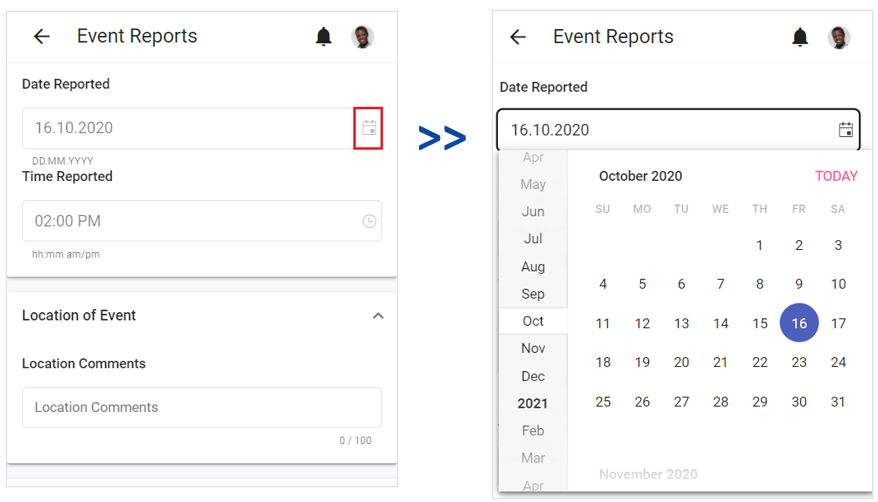
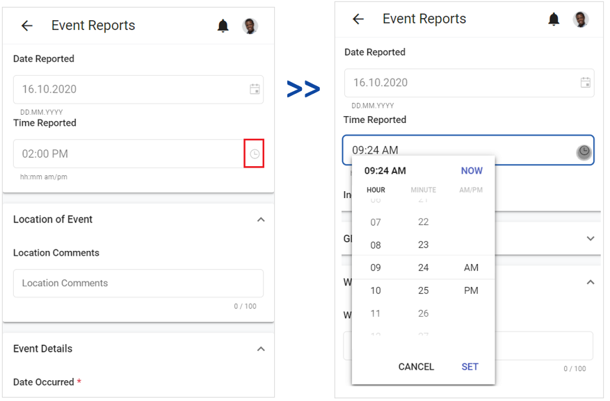

When you are completing a task or event report, any date fields will have a Calendar icon to the right. When you click the Calendar icon, a date selector will display. Once you select a date and click the X icon, the date selector will close, and the selected date will display in the field.

Time fields will have a Time icon to the right. When you click the Time icon, a time selector will display with hour and minute fields and an AM/PM button. By default, the fields display the current time. Use the up/down arrows to select a different time. If you click the PM button, it will change to AM; if you click the AM button, it will change to PM.

Once you have selected a time, click anywhere outside the time selector. The time selector will close, and the selected time will display in the field.
You can also place your cursor in the Time Reported field and manually enter a time.